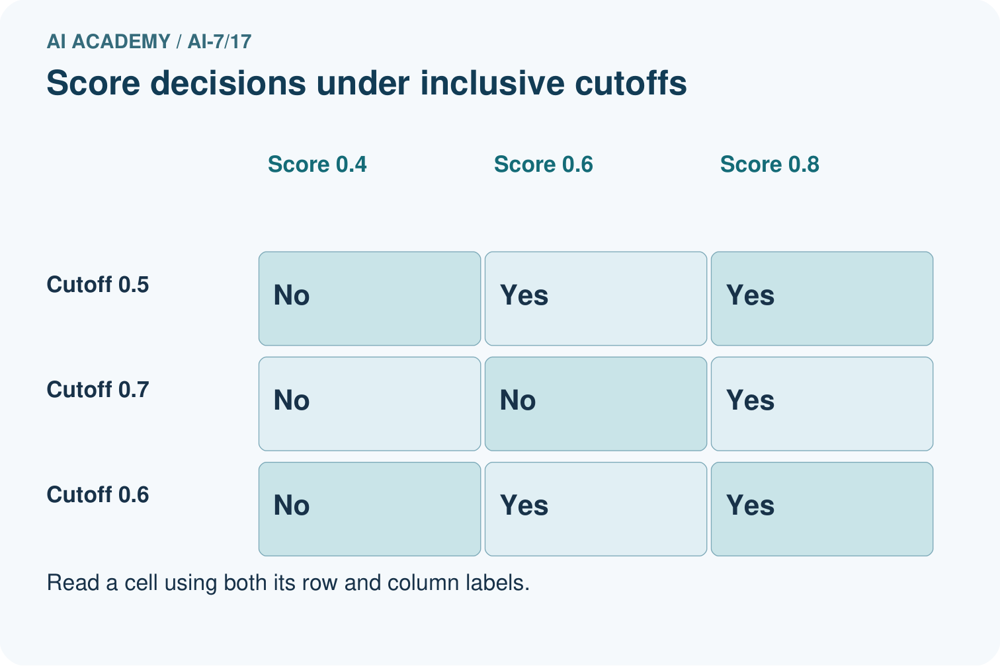
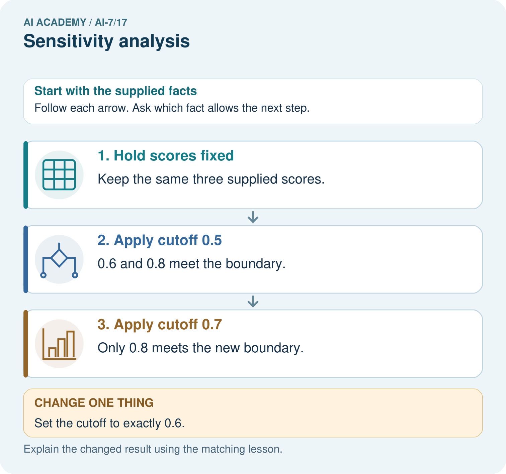
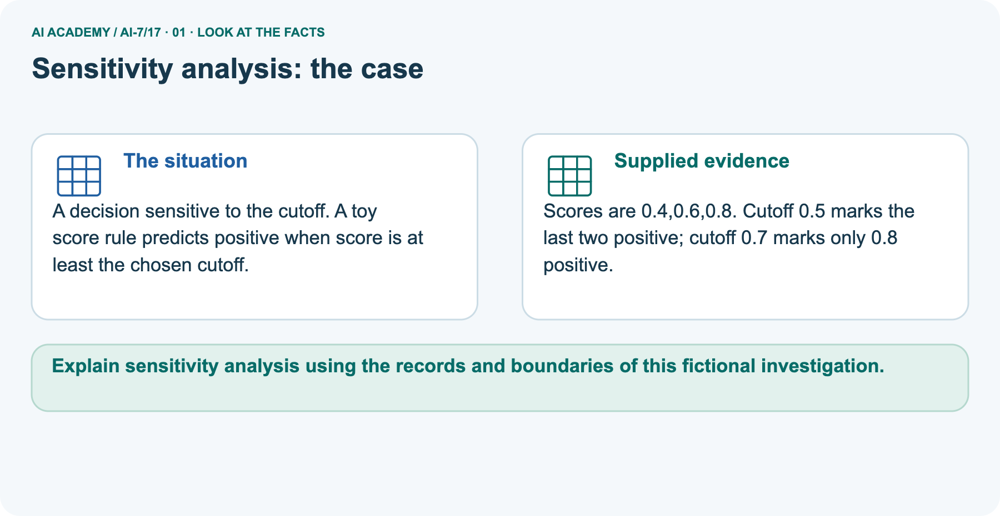
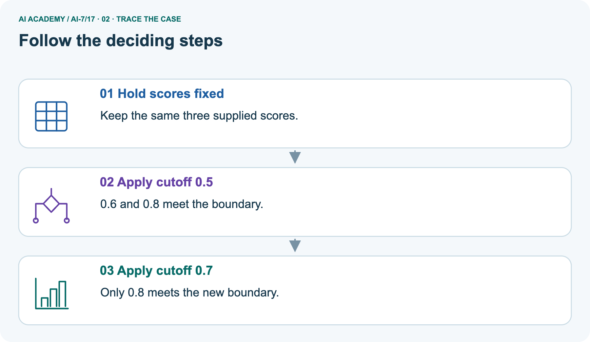
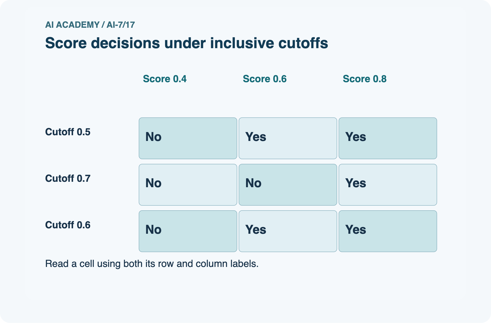
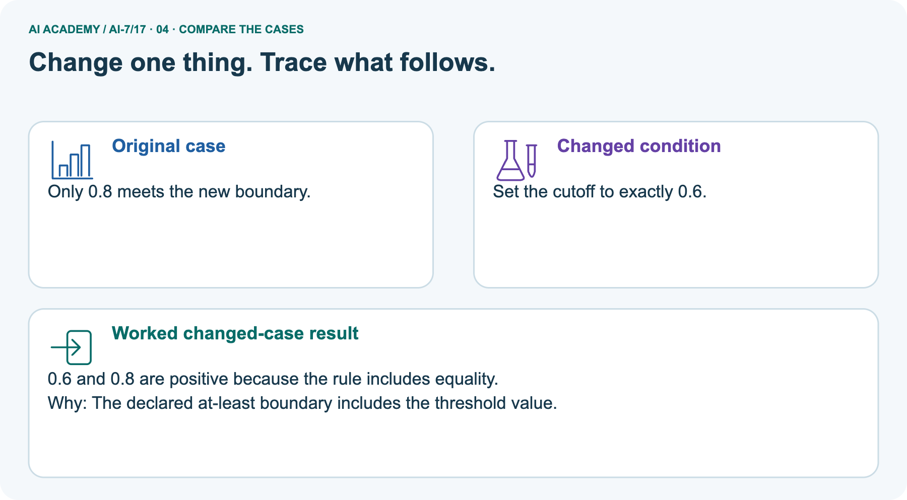
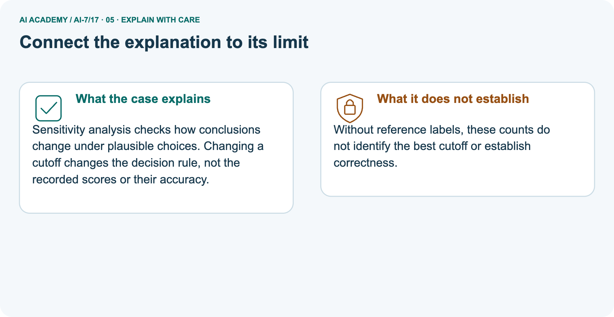
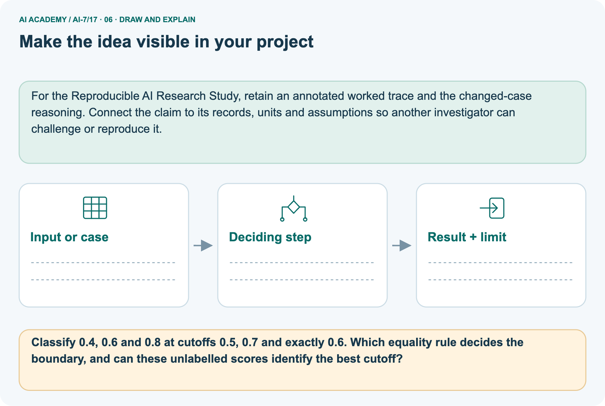

AI Academy · Level 7 · Grade 12 · Week 17 · Workbook
Sensitivity analysis
Learn to understand, design, build, test and explain AI systems responsibly.
Project: Reproducible AI Research Study
THE CONNECTED WEEK
One complete sensitivity range and evidence record.
Keep controls, settings, outcomes, missing labels and selection disclosures together.
Keep one habit: Recall → W1–W3/W5 → independent pass-count comparison → research project → delayed return.
Main lesson · Section 1
Recall · Retrieve before notes
Keep this task’s inputs,rule and response together.
Complete task and evidence
Try the recall before opening notes. Then use a different colour or a labelled second line to correct your explanation.
Without opening the old lesson, explain one key idea from Ablation studies. Give an example and a mistake that the idea helps you avoid.
Without opening the old lesson, explain one key idea from Statistical tests and assumptions. Give an example and a mistake that the idea helps you avoid.
Without opening the old lesson, explain one key idea from Sampling variability. Give an example and a mistake that the idea helps you avoid.
Ablation studies
Statistical tests and assumptions
Sampling variability
Main lesson · Section 5
W1 · Explain the current example
Keep this task’s inputs,rule and response together.
Complete task and evidence
Sensitivity analysis varies plausible choices across a declared range and preserves all results. It describes dependence on choices; choosing the best result becomes tuning and needs separately reserved evaluation for a fresh performance claim. Main retrieval depths 1, 3, 5 have stipulated recall 0.4, 0.7, 0.8 and precision 0.9, 0.7, 0.5.
Recall rises and precision falls across this tested range; no universal best follows without an objective. Raw labels, counts and averaging convention are not supplied. Separate picture scores 0.4, 0.6, 0.8 stay fixed. Positive means score at least cutoff. Cutoffs 0.5 and 0.6 give negative/positive/positive, while 0.7 gives negative/negative/positive. Equality is included.
Positive counts are two, two and one respectively, not correctness counts. No reference labels are supplied. Hypothetical alternative labels can favor either rule and must not be recorded as observed truth. Keep data roles and all tested settings visible; no actual model study, significance result or guarantee outside this range is supplied.
Explain the weekly mechanism in your own words. Use the worked scenario to name its input, decision rule and output.
Main lesson · Section 6
W2 · Trace the worked case
Keep the supplied inputs, comparison rule and evidence together.
Complete task and evidence
Sensitivity analysis varies plausible choices across a declared range and preserves all results. It describes dependence on choices; choosing the best result becomes tuning and needs separately reserved evaluation for a fresh performance claim. Main retrieval depths 1, 3, 5 have stipulated recall 0.4, 0.7, 0.8 and precision 0.9, 0.7, 0.5.
Recall rises and precision falls across this tested range; no universal best follows without an objective. Raw labels, counts and averaging convention are not supplied. Separate picture scores 0.4, 0.6, 0.8 stay fixed. Positive means score at least cutoff. Cutoffs 0.5 and 0.6 give negative/positive/positive, while 0.7 gives negative/negative/positive. Equality is included.
Positive counts are two, two and one respectively, not correctness counts. No reference labels are supplied. Hypothetical alternative labels can favor either rule and must not be recorded as observed truth. Keep data roles and all tested settings visible; no actual model study, significance result or guarantee outside this range is supplied.
Retrieval cutoffs 1, 3, 5 yield recall .4, .7, .8 and precision .9, .7, .5. Show the intermediate steps and give the conclusion with its scope.
| Retrieved items k | Supplied recall | Supplied precision | Pattern in the tested range |
|---|---|---|---|
| 1 | 0.4 | 0.9 | Lowest recall; highest precision |
| 3 | 0.7 | 0.7 | Intermediate summaries |
| 5 | 0.8 | 0.5 | Highest recall; lowest precision |
| From k = 1 to k = 5 | Increase 0.4, or 40 percentage points | Decrease 0.4, or 40 percentage points | Tradeoff; no universal best setting |
| What remains unknown | Raw labels/counts | Averaging convention | No invented per-query count or significance |
Main lesson · Section 7
W3 · Repair a misconception
Keep this task’s inputs,rule and response together.
Complete task and evidence
Sensitivity analysis varies plausible choices across a declared range and preserves all results. It describes dependence on choices; choosing the best result becomes tuning and needs separately reserved evaluation for a fresh performance claim. Main retrieval depths 1, 3, 5 have stipulated recall 0.4, 0.7, 0.8 and precision 0.9, 0.7, 0.5.
Recall rises and precision falls across this tested range; no universal best follows without an objective. Raw labels, counts and averaging convention are not supplied. Separate picture scores 0.4, 0.6, 0.8 stay fixed. Positive means score at least cutoff. Cutoffs 0.5 and 0.6 give negative/positive/positive, while 0.7 gives negative/negative/positive. Equality is included.
Positive counts are two, two and one respectively, not correctness counts. No reference labels are supplied. Hypothetical alternative labels can favor either rule and must not be recorded as observed truth. Keep data roles and all tested settings visible; no actual model study, significance result or guarantee outside this range is supplied.
A report omits this qualification: A stable tested range does not establish stability under every parameter or dataset change. Explain how omitting it could change a reader's interpretation, and write an accurate replacement.
Main lesson · Section 9
W5 · Explain the limitation
Keep this task’s inputs,rule and response together.
Complete task and evidence
Sensitivity analysis varies plausible choices across a declared range and preserves all results. It describes dependence on choices; choosing the best result becomes tuning and needs separately reserved evaluation for a fresh performance claim. Main retrieval depths 1, 3, 5 have stipulated recall 0.4, 0.7, 0.8 and precision 0.9, 0.7, 0.5.
Recall rises and precision falls across this tested range; no universal best follows without an objective. Raw labels, counts and averaging convention are not supplied. Separate picture scores 0.4, 0.6, 0.8 stay fixed. Positive means score at least cutoff. Cutoffs 0.5 and 0.6 give negative/positive/positive, while 0.7 gives negative/negative/positive. Equality is included.
Positive counts are two, two and one respectively, not correctness counts. No reference labels are supplied. Hypothetical alternative labels can favor either rule and must not be recorded as observed truth. Keep data roles and all tested settings visible; no actual model study, significance result or guarantee outside this range is supplied.
For the worked scenario, propose one additional case that could reveal a failure, describe its expected outcome before running it, and explain what would need to remain fixed for a fair comparison.
Do not reuse W4 as a new final test after receiving feedback.
Main lesson · Section 4
Try alone · Selected transfer
Keep this task’s inputs,rule and response together.
Complete task and evidence
Thresholds .4, .5, .6 give passes 8, 9, 7 out of 10. Report range and a selection limit.
Attempt this case before feedback. Record any help. Earlier examples below are further practice; a case already practised with feedback cannot establish fresh transfer.
Independent case: Apply a new case independently
Main lesson · Section 10
Project · Keep the research evidence
Preserve the question, protocol, observations, analysis and limits.
Complete task and evidence
Add a labelled sensitivity analysis evidence sheet to Reproducible AI Research Study. Show how you can explain the mechanism and terminology of sensitivity analysis.
Use the supplied fictional case and keep its inputs, intermediate steps, calculation or prediction, and limitation. Connect this record to last week’s record; a matching answer without a trace is insufficient.
Main lesson · Section 11
Feedback · Repair and return
Keep this task’s inputs,rule and response together.
Complete task and evidence
Revisit this idea with your teacher after a delay. Familiarity is different from explaining and using it on a changed case.
| Evidence | My record |
|---|---|
| Worked alone / hint / model | |
| First step I repaired and why | |
| New case checked later; date and result | |
| What I can now explain without notes | |
| One remaining question |
Reference bank and extra practice
Choose the reference that helps your next step.
Reference · Supported W2 record
Reference · Section 2
Reference · Supported W2 record
Keep this task’s inputs,rule and response together.
Complete task and evidence
Use W2: Trace the worked case for Sensitivity analysis. Record the answer once; the lesson and workbook refer to the same attempt.
| Given inputs | Procedure I chose | Middle steps | Result and check |
|---|---|---|---|
Extra practice · Individual reasoning check
Reference · Section 3
Extra practice · Individual reasoning check
Keep this task’s inputs,rule and response together.
Complete task and evidence
Use the worked case for Sensitivity analysis. Proposed explanation: “The worked result establishes every future case”. Decide whether this explanation is supported.
Point to the step or supplied fact that decides; explain your repair if needed.
Reference · Earlier W4 response copy
Reference · Section 8
Reference · Earlier W4 response copy
Keep this task’s inputs,rule and response together.
Complete task and evidence
Thresholds .4, .5, .6 give passes 8, 9, 7 out of 10. Report range and a selection limit.
Extra practice · Pictured case
Reference · Section 12
Extra practice · Pictured case
Keep this task’s inputs,rule and response together.
Complete task and evidence
A decision sensitive to the cutoff. A toy score rule predicts positive when score is at least the chosen cutoff.
Scores are 0.4,0.6,0.8. Cutoff 0.5 marks the last two positive; cutoff 0.7 marks only 0.8 positive.
Classify 0.4, 0.6 and 0.8 at cutoffs 0.5, 0.7 and exactly 0.6. Which equality rule decides the boundary, and can these unlabelled scores identify the best cutoff?
Support used: alone / hint / worked example. This record is practice evidence.
Project connection: For the Reproducible AI Research Study, retain an annotated worked trace and the changed-case reasoning.
Connect the claim to its records, units and assumptions so another investigator can challenge or reproduce it.







Reference · Project milestone
Reference · Section 13
Reference · Project milestone
Keep this task’s inputs,rule and response together.
Complete task and evidence
Project: Reproducible AI Research Study
Current milestone: Test changed cases. Keep normal, boundary and failure cases; compare expected and observed results.
For the Reproducible AI Research Study, retain an annotated worked trace and the changed-case reasoning. Connect the claim to its records, units and assumptions so another investigator can challenge or reproduce it.
| Evidence to keep | My record |
|---|---|
| This week’s input and deciding step | |
| Prediction and actual result (or labelled paper trace) | |
| One change since the previous checkpoint and why | |
| One error or limit and the next test |
Extra practice · Predict,check and repair
Reference · Section 14
Extra practice · Predict,check and repair
Keep supported feedback separate from the independent case.
First supported question and optional hint
A decision sensitive to the cutoff. A toy score rule predicts positive when score is at least the chosen cutoff.
Which labelled step matches this detail? Only 0.8 meets the new boundary.
1. Hold scores fixed
2. Apply cutoff 0.7
3. Apply cutoff 0.5
Hint if needed: Read the steps in the pictorial case. Match the supplied detail to the stage that performs or records it.
Practice 1: explain the deciding evidence
Check after the first attempt
After your attempt, compare with the supported explanation: Apply cutoff 0.7 Only 0.8 meets the new boundary. Sensitivity analysis checks how conclusions change under plausible choices.
Changing a cutoff changes the decision rule, not the recorded scores or their accuracy.
Changed-case question and optional hint
Changed-case practice: Set the cutoff to exactly 0.6. Which conclusion is supported by the supplied facts?
1. We can decide the result without examining the changed input or the procedure.
2. This one example guarantees correct results for every future input.
3. 0.6 and 0.8 are positive because the rule includes equality.
Hint if needed: Use the changed condition and the deciding step in the pictorial trace. The answer must say what follows from those facts.
Practice 2: explain the deciding evidence
Check after the changed attempt
After your attempt, compare with the supported explanation: 0.6 and 0.8 are positive because the rule includes equality. The declared at-least boundary includes the threshold value.
Repair and retain the record
Review Ablation studies (ai-7/16). Goal: Explain the mechanism and terminology of ablation studies. Short practice: Calculate the filter ablation’s two rates and count change.
Which single component is altered, and why does also changing the model prevent isolating the filter?. Return to this week and explain what you changed.
Review Statistical tests and assumptions (ai-7/14). Goal: Explain the mechanism and terminology of statistical tests and assumptions. Short practice: Calculate each paired difference and the observed sum.
Count null arrangements with absolute sum at least four, compute p, and explain the decision at threshold 0.05.. Return to this week and explain what you changed.
Review Sampling variability (ai-7/11). Goal: Explain the mechanism and terminology of sampling variability. Short practice: Calculate the two four-case rates and their difference.
Explain how changed included cases can affect a fixed model, and why identical deterministic records should not differ on a rerun.. Return to this week and explain what you changed.
Use Download completed work in the hosted lesson to export your answers, reflections, practice feedback and code-run evidence. Open the HTML copy to read or print it.
Drafts stay in this browser when storage is available; clear drafts on a shared device.
Earlier wording, alternatives and picture transcripts
Use this supported practice once, in the browser or on paper. Keep the reserved independent assessment for a separate first attempt before teacher feedback.
Repair a missing building block
Keep your completed work
Reference · Six-picture response sheets
Reference · Section 15
Reference · Six-picture response sheets
Choose the picture that helps explain the current step.
01. Sensitivity analysis: the case



A decision sensitive to the cutoff. A toy score rule predicts positive when score is at least the chosen cutoff. Supplied facts: Scores are 0.4,0.6,0.8.
Cutoff 0.5 marks the last two positive; cutoff 0.7 marks only 0.8 positive.
Point to the given fact that matters most. Explain why it matters.
02. Follow the deciding steps



Hold scores fixed: Keep the same three supplied scores. → Apply cutoff 0.5: 0.6 and 0.8 meet the boundary. → Apply cutoff 0.7: Only 0.8 meets the new boundary.
Point to each numbered stage and explain which recorded input it uses.
03. Score decisions under inclusive cutoffs



Score decisions under inclusive cutoffs. Cutoff 0.5: Score 0.4 = No, Score 0.6 = Yes, Score 0.8 = Yes. Cutoff 0.7: Score 0.4 = No, Score 0.6 = No, Score 0.8 = Yes. Cutoff 0.6: Score 0.4 = No, Score 0.6 = Yes, Score 0.8 = Yes.
Read the labels and values. Explain the relationship the model shows.
04. Change one thing. Trace what follows.



Original case: Only 0.8 meets the new boundary. Changed condition: Set the cutoff to exactly 0.6. Expected result: 0.6 and 0.8 are positive because the rule includes equality.
Reason: The declared at-least boundary includes the threshold value.
Predict before checking the worked changed-case result. Name what changed and what the supplied facts allow you to conclude.
05. Connect the explanation to its limit



Sensitivity analysis checks how conclusions change under plausible choices. Changing a cutoff changes the decision rule, not the recorded scores or their accuracy.
Limit: Without reference labels, these counts do not identify the best cutoff or establish correctness.
Explain the case, then point to a limit on the claim.
06. Make the idea visible in your project



For the Reproducible AI Research Study, retain an annotated worked trace and the changed-case reasoning. Connect the claim to its records, units and assumptions so another investigator can challenge or reproduce it.
Draw your input, deciding step, result and limit. Supported question: Classify 0.4, 0.6 and 0.8 at cutoffs 0.5, 0.7 and exactly 0.6.
Which equality rule decides the boundary, and can these unlabelled scores identify the best cutoff?
Draw your project trace and justify the deciding step using evidence.